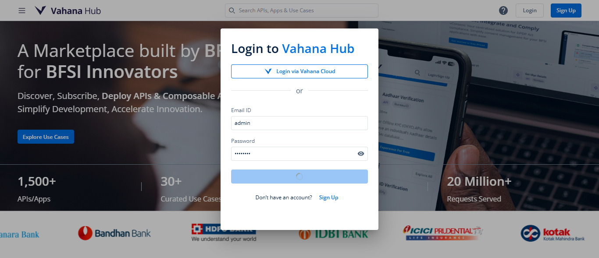

-
Navigate to vBank Landing Page
6:12:23 pm / 00:00:51:023 Fail
Navigate to vBank Landing Page
06.18.2025 6:12:23 pm 06.18.2025 6:13:14 pm 00:00:51:023 · #test-id=1FailVeirfy Successfully navigate to vBank Landing Page after loginGiven the user has successfully logged in and is on the vHub home pageWhen the user navigates to the Asset Details pagestepDefinitions.Hooks.AddScreenshot(io.cucumber.java.Scenario)Then the user should be redirected to the vBank Landing PageStep skipped -
App has been successfully Published to Sandbox.
6:13:14 pm / 00:00:13:237 Fail
App has been successfully Published to Sandbox.
06.18.2025 6:13:14 pm 06.18.2025 6:13:27 pm 00:00:13:237 · #test-id=10FailVerify all the required field fill successfully to publish the app.Given User Land on vbank Landing pagestepDefinitions.Hooks.AddScreenshot(io.cucumber.java.Scenario)imageAnd Fill all the required field of App setting pageStep skippedWhen Fill all required field of Consent configuration pageConsent Configuration data details Step skippedThen Fill all the required field on Publish App page.First Release vBank app Step skipped
-
org.openqa.selenium.remote.UnreachableBrowserException
2 tests
org.openqa.selenium.remote.UnreachableBrowserException
2 failedStatus Timestamp TestName Fail 18:12:35 pm When the user navigates to the Asset Details page Navigate to vBank Landing Page.Veirfy Successfully navigate to vBank Landing Page after login.When the user navigates to the Asset Details pageFail 18:12:59 pm stepDefinitions.Hooks.AddScreenshot(io.cucumber.java.Scenario) Navigate to vBank Landing Page.Veirfy Successfully navigate to vBank Landing Page after login.stepDefinitions.Hooks.AddScreenshot(io.cucumber.java.Scenario) -
org.openqa.selenium.NoSuchSessionException
1 tests
org.openqa.selenium.NoSuchSessionException
1 failedStatus Timestamp TestName Fail 18:13:14 pm Given User Land on vbank Landing page App has been successfully Published to Sandbox..Verify all the required field fill successfully to publish the app..Given User Land on vbank Landing page
-
@vBank1
2 tests
@vBank1
2 failedStatus Timestamp TestName Fail 18:12:23 pm Veirfy Successfully navigate to vBank Landing Page after login Navigate to vBank Landing Page.Veirfy Successfully navigate to vBank Landing Page after loginFail 18:13:14 pm Verify all the required field fill successfully to publish the app. App has been successfully Published to Sandbox..Verify all the required field fill successfully to publish the app.
Started
Jun 18, 2025 06:12:20 pm
Ended
Jun 18, 2025 06:13:27 pm
Features Passed
0
Features Failed
2
Features
Scenarios
Steps
Timeline
Tags
| Name | Passed | Failed | Skipped | Others | Passed % |
|---|---|---|---|---|---|
| @vBank1 | 0 | 2 | 0 | 0 | 0% |